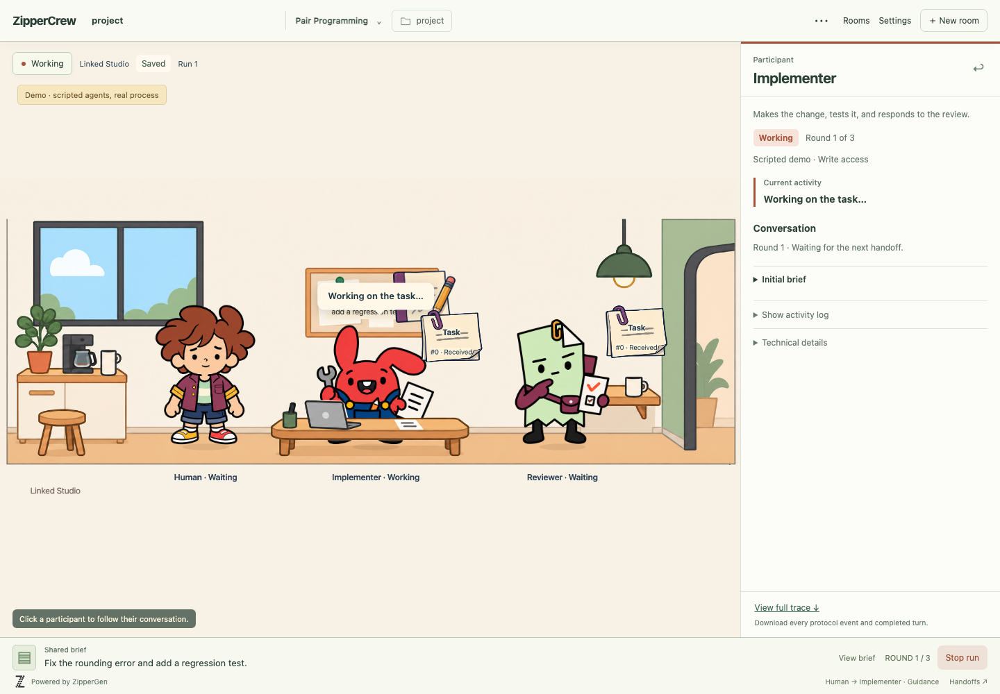

The approved cast and office, with purposeful ambient routines that yield to protocol work. This recording uses isolated demo data and scripted agents.
Ready room · Ambient activity · Protocol work · Ambient inspection snapshot
